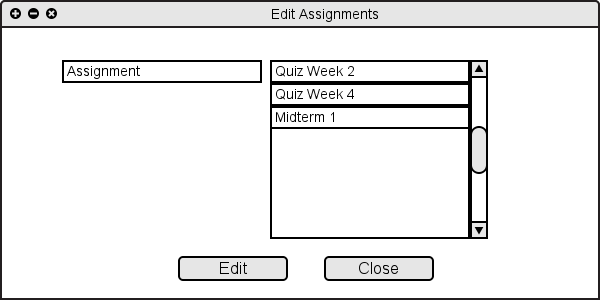
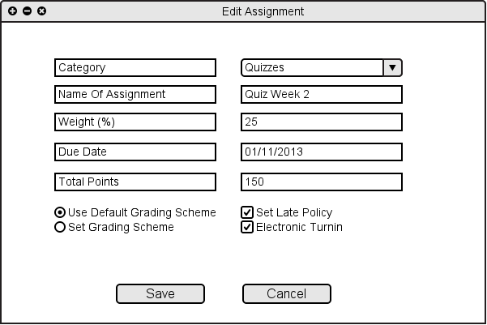
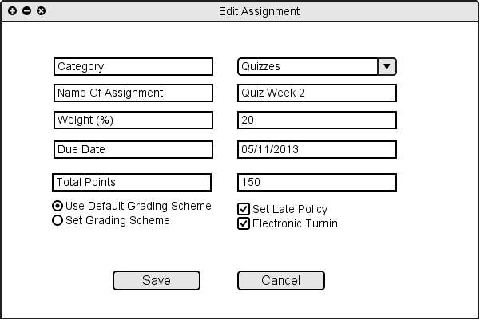

2.4.5 Edit Assignment
When the user chooses "Edit Assignment" from "Assignments" menu or from "Assignemts/Categories...", the system shows Figure 2.4.5 A.

Figure 2.4.2 A: Editing Assignment
After the user chooses a category and clicks on the "Edit", the system shows Figure 2.4.5 B.

Figure 2.4.5 B: Editing Assignment Filled
Now the user is able to rename and/or change the weight of that specific assignment. The user can also change the due date, late policy, turn in method, grading scheme, and the category of assignment.

Figure 2.4.5 B: Editing Assignment Filled
Prev: Add Category
| Next: Delete Assignment
| Up: Manage Assignments/Categories
| Top: index